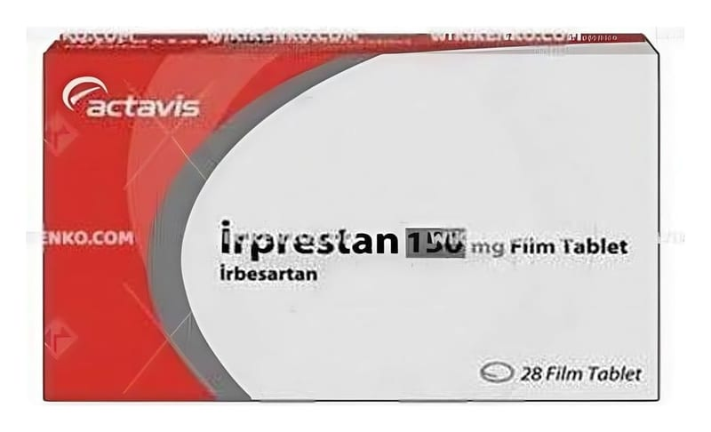

Irprestan 150 mg Film Tablet, 28 Adet

Ne için kullanılır
KT · Bölüm 1İRPRESTAN, 150 mg irbesartan etkin maddesini içerir. Anjiyotensin II reseptör antagonistleri olarak bilinen bir tansiyon düşürücü ilaç grubuna dahildir. Anjiotensin-lI vücutta üretilen bir maddedir. Kan damarlarında bulunan reseptörlere bağlanarak kan damarlarının daralmasına yol açar. Kan damarları daralınca içinde dolaşmakta olan kanın basıncı artar. İRPRESTAN, anjiyotensin-II adlı bu maddenin reseptörlere bağlanmasını engeller. Bu şekilde kan damarlarını gevşetir ve kan basıncını düşürür. İRPRESTAN, yüksek tansiyon ve tip 2 diyabet (şeker) hastalarında, böbrek fonksiyonlarındaki azalmayı yavaşlatır. 28 ve 90 film kaplı tablet içeren blister şeklinde ambalajlarda kullanıma sunulmaktadır. Piyasada ayrıca İRPRESTAN 300 mg film tablet formu da mevcuttur. Doktorunuz size İRPRESTAN'ı aşağıdaki nedenlerden biri veya birkaçı dolayısıyla reçetelemiş olabilir: | — Yüksek kan basıncı tedavisinde (esansiyel hipertansiyon) — Yüksek kan basıncı, tip 2 diyabet (şeker) ve böbrek fonksiyonu bozulmuş olan hastalarda böbreklerin korunmasında 1/6